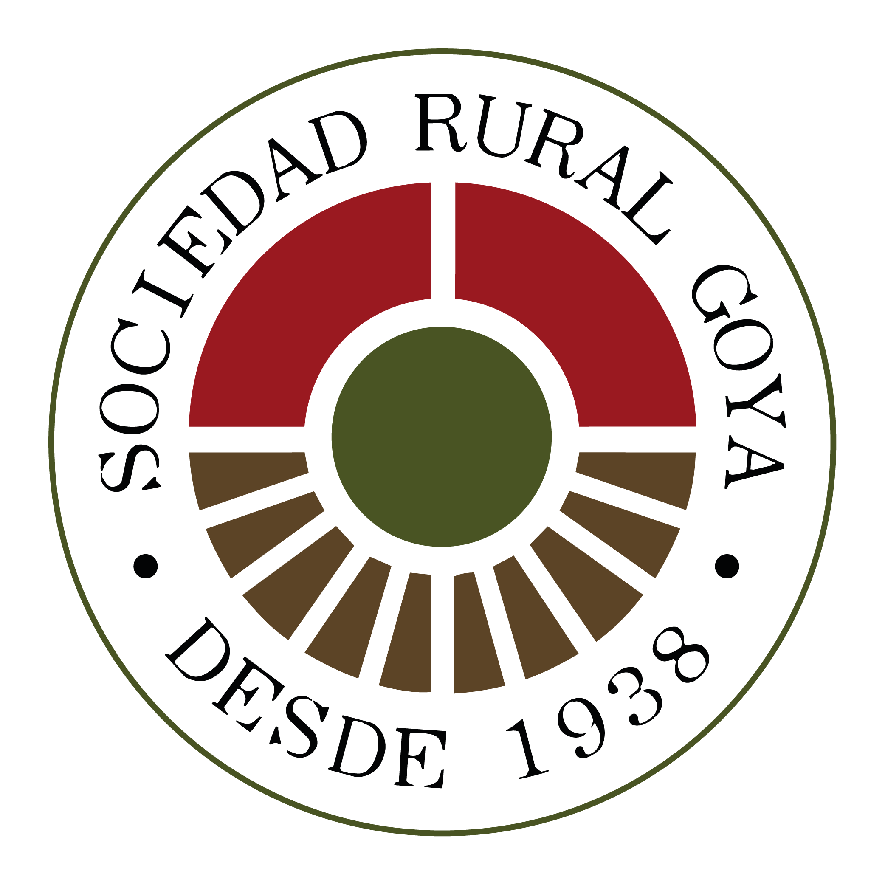
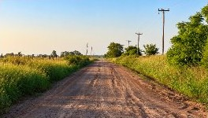

Escuchar
Conocer las necesidades de productores y productoras.
Una entidad gremial sin fines de lucro que representa a los productores ganaderos de la región.
La Sociedad Rural de Goya es una entidad gremial sin fines de lucro fundada en 1938. Representa a productores ganaderos de Goya y promueve su participación en la vida institucional.
Su trabajo busca acercar las inquietudes del sector, impulsar gestiones y mantener informados a los productores sobre temas vinculados con su actividad.

Es reunir las inquietudes de los productores y acercarlas a organismos y espacios de decisión. La participación permite conocer necesidades y construir una voz compartida.
Conocer las necesidades de productores y productoras.
Acercar inquietudes a los organismos correspondientes.
Comunicar novedades y gestiones de interés para el sector.

Infraestructura y circulación para la actividad productiva.
Acceso a la energía en los espacios rurales.
Comunicación e información para los productores.